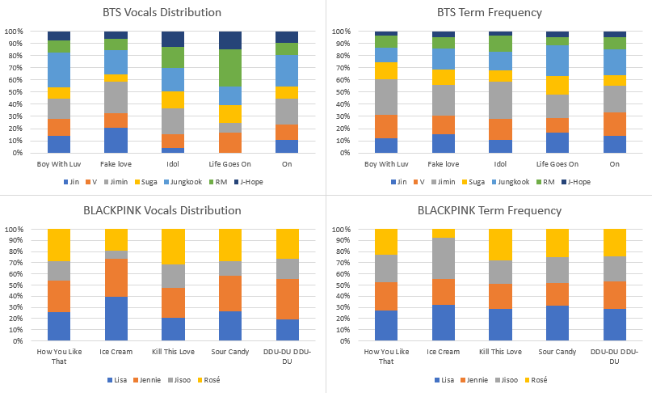

Case Study 1: Exploring the reception of BTS and BLACKPINK
through the lens of fandom
This case study examined the work and reception of certifiably the two most popular K-pop groups in the English-speaking charts: BLACKPINK and BTS.
After having filtered the YouTube comments for those that express an opinion using the opinion miner, I collected keyword frequency data so as to perform some manual topic-modelling.
The conclusion I was able to draw from this was that commenters on BTS songs frequently used terms related to the fandom of the band, whereas BLACKPINK commenters overwhelmingly discussed the singers.
Elving-Hwang asserts that K-pop production companies often attempt to foster parasocial relationships between singers and their fans and completed a study that found that Korean fans had a tendency to fixate on a particular 'idol' (K-pop singer) (2018).
Based off this observation and the fact that the BLACKPINK singers' names were occurring with such great frequency within the corpus, I hypothesised that this same effect was occurring amongst English-speaking audiences.
Whilst I could have set out to prove this hypothesis with computational analysis such as that performed in case study 2, I elected to instead do so with a musicological approach.
The relative frequency of singer-tokens varied on different songs, and therefore I proposed that if I were not able to find any musicological reason why fans may decide to mention one singer over another in the comments section of a given video then that would point towards the expression of fan identity being the driving force behind the phenomenon.
The first musicological analysis I carried out was statistical analysis of the sung-time of each singer and whether that had an effect on how likely they were to be mentioned over another band member in the comment section
Due to time constraints, I narrowed my focus to the 5 most popular songs for BTS and BLACKPINK based on chart position and/or English language engagement on YouTube as this would necessarily prove us with more data from which to draw conclusions.
Figure 1.1 displays the sung-time and singer-token frequencies for these 10 songs comparatively as a composite bar chart

Figure 1.1 - Compostite bar chart displaying the sung-time and singer-token frequencies for 5 songs comparatively.
Two conclusions were draw from this data through a number of statistical analyses:
1) Although initial uniformity between the datasets for BLACKPINK imply correlation, analyses of specific singers demonstrate that this is incidental.
2) Furthermore, comparison with the data pertaining to BTS highlights that it is possible to predict distributions of singer-name tokens on the basis of how much time in the song that singer occupies vocally; for BTS songs, there is a correlation between sung-time and singer-token frequencies, but not for BLACKPINK.
The next analysis was a
1 Elfving-Hwang, J. (2018) ‘K-pop idols, artificial beauty and affective fan relationships in South Korea’, in Routledge handbook of celebrity studies. Routledge, pp. 190–201